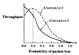

| Previous | Table of Contents | Next |
This leads to nine possible validation tests. Of course, it may not be feasible to use some of these possibilities. For example, no real-system measurements may be available or no theoretical results may be available. In most real situations, in fact, none of the nine possibilities may be feasible. This is because simulation, being a time-consuming effort, is resorted to only if no other reliable means of finding the same information exist. In such cases, the analyst should at least validate the model for simple configurations.
The three sources of comparable information are described next.
Expert intuition is the most practical and common way to validate a model. A brainstorming meeting of the people knowledgeable with the system may be called. The people are drawn from those involved in the design, architecture, implementation, analysis, marketing, or maintenance of the system. Of course, the selection depends upon the life-cycle stage of the system being modeled. For systems already in use, field service and marketing people may have a better knowledge than implementors. The assumptions, input values and distributions, as well as outputs (if available) are presented and discussed in the meeting.
In practice, it is better to validate the three aspects—assumptions, input, and output—separately as the model progresses rather than waiting till the end. The assumptions of the model should be brainstormed as soon as a preliminary design of the simulation model has been prepared. The input values and distribution should be discussed and validated next during model development. The output should be validated as soon as an executable model exists and it has been verified.
One technique to judge the validity of outputs is to present the model results as well as the measurements from real systems to these experts and see if they can distinguish between them.
Expert analysts can point out errors in simulation by simply looking at the simulation outputs. To illustrate this and the use of expert intuition technique, we present, in Figure 25.6, a graph of network throughput as a function of probability of packet loss obtained from an invalid version of the network simulation model. Two different alternatives were simulated, and the normalized throughput for the two alternatives is shown separately in the figure. For alternative 1, the throughput drops as the probability of loss increases. For alternative 2, the throughput initially improves, reaches a maximum at a loss probability of 0.2, and then falls off. The results for alternative 2 are counterintuitive because, normally, packet loss leads to reduced throughput whereas the graph shows that for the best performance we ought to lose 20% of the packets. An expert in the field would wonder why the performance with no loss is worse than that for a 20% loss. This may be because alternative 2 was either not designed properly (algorithm design error) or not implemented properly (programming error). The two possibilities are related to validation and verification, respectively. In this particular instance, the problem was found to be an algorithm design error; an improved version of the alternative was later designed; this version behaved as expected.

FIGURE 25.6 Example of problems caused by invalid assumptions that are easily detected by experts.
Comparison with real systems is the most reliable and preferred way to validate a simulation model. In practice, however, this is often unfeasible either because the real systems may not exist or because the measurements may be too expensive to carry out. Even one or two measurements add considerably to the validity of a simulation.
Assumptions, input values, output values, workloads, configurations, and system behavior should be compared with those observed in the real world. The statistical techniques described in Chapter 13 to test whether two systems are identical may be used to compare the simulation model and the measured data. Input distributions can be ascertained by statistical distribution fitting techniques or by using statistical tests (for example, a chi-square test). In trace-driven simulations, multiple traces obtained under different environments should be used to validate the model.
In some cases, it is possible to analytically model the system under simplifying assumptions. It may also be possible to analytically determine what the input distributions should be. In such cases, the similarity of theoretical results and simulation results is used to validate the simulation model. Similarly, in developing queueing system models of computer systems, analysts often find that the real-system behavior is too difficult to model exactly. In such cases, they develop an approximate technique and validate it by comparing the results with those obtained from a simulation.
Validation by comparing theoretical and simulation results should be used with care as both may be invalid in the sense that they both may not represent the behavior of a real system. Nonetheless, it is a useful technique provided a few points (of theory or simulation) have been validated using expert intuition or real-system measurements. Analytical modeling then allows validation for more complex cases. For example, a multiprocessor simulation model may be validated using a few real one- or two-processor systems, and then theory can be used to validate for a larger number of processors.
Before concluding this section on validation, we must point out that a “fully validated model” is a myth. In reality, it is only possible to show that the model is not invalid for some of the situations compared. To prove that the model produces the same result as the original system under all circumstances would generally require an inordinate amount of resources. The validation exercise is therefore limited to a few selected scenarios, and an attempt is made to cover all important cases. This helps increase the degree of confidence in the model results.
In most simulations, only the steady-state performance, that is, the performance after the system has reached a stable state, is of interest. In such cases, results of the initial part of the simulation should not be included in the final computations. This initial part is also called the transient state. The problem of identifying the end of the transient state is called transient removal.
| Previous | Table of Contents | Next |
){kind=link}
){kind=link}